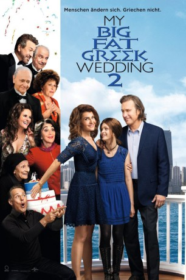

#3988 My Big Fat Greek Wedding 2
 gesehen am 13.07.2016
gesehen am 13.07.2016
 
 IMDB-Wertung: 6.1 / 10
IMDB-Wertung: 6.1 / 10  Tomatometer: 28
Tomatometer: 28  Metascore: 0
Metascore: 0 
Einige Jahre sind seit der der chaotischen, multikulturellen Vermählung von Toula (Nia Vardalos) und Ian Miller (John Corbett) vergangen, die beiden immer noch ein Paar. Wobei es im Arbeits- und Familienalltag gar nicht so leicht ist, die Beziehung frei von Ärger zu halten – woran nicht zuletzt Toulas und Ians Teenager-Tochter Paris (Elena Kampouris) Schuld ist, die es in die Ferne zieht. Doch ihre Eltern können sich mit der Vorstellung, dass ihre Kleine in Florida, Texas oder New York aufs College geht, nicht anfreunden. Und auch im weiteren Familienkreise droht Stress, als sich herausstellt, dass Toulas Eltern, Maria (Lainie Kazan) und Gus Portokalos (Michael Constantine), formal gar nicht verheiratet sind. Der Priester vergaß einst, die Urkunde zu unterzeichnen! Also steht eine neue Hochzeit mit der ganzen Familie bevor. Tante Voua (Andrea Martin) ist natürlich ebenfalls wieder dabei und sorgt für ordentlich Trubel...
Jahr: 2016
Dauer: 93 Minuten
FSK: 0
Land: USA Studio: Universal PicturesTonspuren: DTS - ,
Untertitel: Deutsch, Englisch,
Auflösung: 1080p (1920x804) Größe: 6922 MB
Genre: Komödie, Familie, Liebe
Regisseur: Kirk Jones
Drehbuch: Ting Zhang
Soundtrack:
Darsteller:
 Nia Vardalos als Toula
Nia Vardalos als Toula John Corbett als Ian
John Corbett als Ian Michael Constantine als Gus
Michael Constantine als Gus Lainie Kazan als Maria
Lainie Kazan als Maria Andrea Martin als Aunt Voula
Andrea Martin als Aunt Voula Gia Carides als Nikki
Gia Carides als Nikki Joey Fatone als Angelo
Joey Fatone als Angelo Elena Kampouris als Paris
Elena Kampouris als Paris Alex Wolff als Bennett
Alex Wolff als Bennett Louis Mandylor als Nick
Louis Mandylor als Nick Bruce Gray als Rodney Miller
Bruce Gray als Rodney Miller- Fiona Reid als Harriet Miller
 Ian Gomez als Mike
Ian Gomez als Mike Jayne Eastwood als Mrs. White
Jayne Eastwood als Mrs. White Rob Riggle als Northwestern Rep
Rob Riggle als Northwestern Rep Mark Margolis als Panos
Mark Margolis als Panos Rita Wilson als Anna
Rita Wilson als Anna John Stamos als George
John Stamos als George- Jeanie Calleja als Ilaria
- Michael Sofos als Costa
- Leonidas Castrounis als Aristotle
- Peter Tharos als Yanni
- Harper Gunn als Paris at 4
- Hershel Blatt als Tommy
- Tannis Burnett als Edie
- Kathryn Greenwood als Marge
- Teresa Pavlinek als Dominique
- Roger Wong als Pim
- Kolton Stewart als Clifford
- Ethan Pugiotto als Theadore
- Ashleigh Rains als Wedding Planner
 Maria Vacratsis als Aunt Freida
Maria Vacratsis als Aunt Freida- Jeff White als Patrick
- Lauren Saarimaki als Elizabeth
- Bess Meisler als Mana-Yiayia
- Stavroula Logothettis als Athena
- Aniela Kurylo als Physical Therapist
- Sam Moses als Kaveh
- Alec Stockwell als Baird
- Gerry Mendicino als Uncle Taki
- Kathryn Haggis als Marianthi
- Theodore Paraskevopoulos als Priest
- Chrissy Paraskevopoulos als Jennie
- Julia Gartha als Tiahn
- Constantine Vardalos als Chanter
- Lindsay Christopher als Student , uncredited
- Maxillian Grimm als Chef , uncredited
- Dave Reachill als Teacher , uncredited
Datei: X:\3-Trilogie(G-M)\My Big Fat Greek\My Big Fat Greek Wedding 2 (2016, FSK0, 1920x804).mkv seit 08.07.2016
Festplatte: HD Collection-2(A-Z)-3(A-M)
 Alle Filme aus Gruppe '3-Trilogie(G-M)\My Big Fat Greek'
Alle Filme aus Gruppe '3-Trilogie(G-M)\My Big Fat Greek'